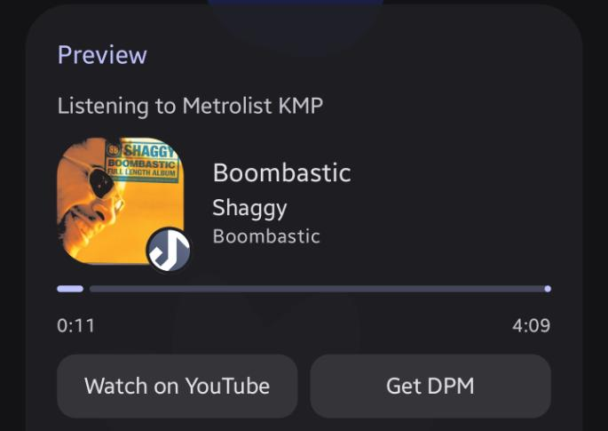

Features
What DPM can do, and how the pieces fit together.
Dynamic mode
DPM watches what you're doing and picks something to show. Music, video, games and other apps can each be turned on or off and put in priority order. Music and video are separate sources, so you can rank them differently. The top one with something to show wins. Games always show up, and other apps show up once you've allowed them on the Apps tab. Optional buttons link to YouTube and to the DPM page.
If nothing is playing, you can have DPM fall back to your static status. Turn on Use static when nothing is playing to do that.
Static mode
Prefer to write it yourself? Pick a type (Playing, Listening to, Watching or Competing in), then fill in a name, details and state. You can add large and small images from a direct image link, a large text line, a timer (elapsed or countdown) and up to two buttons, and save presets. Competing in doesn't show a timer, so the timer option is hidden for that type. The preview updates as you type, and everything saves on its own.
The preview
The card on the Presence tab is meant to look like the real thing on Discord: cover art, a little app icon in the corner and a progress bar for music and video.

Apps
- Popular apps is one switch that allows the installed video, music and social apps, like YouTube, Spotify, Instagram and TikTok. Tap it to choose which ones.
- Every other app allows anything else you open. Switch off the ones you don't want.
- Each app can be Automatic, Always or Never. Never means the app is hidden, even if it's playing music. Always shows it whenever it's on screen, even if the switches above are off.
- Any app can also get custom text with its own type, name, details and state.
- The list is grouped into apps that are shown, hidden and custom, and you can search it.
Schedule and rules
- A time window is a set of days plus a start and end time. If it ends before it starts, it carries on into the next day.
- Only when Discord status is Online keeps your presence hidden while your status is Idle, Do Not Disturb or Invisible.
- Pause stops sharing for now without turning DPM off.
Accounts
- Add accounts by logging in with Discord.
- Switching is instant, and presence moves over to the new account.
- Removing an account only removes it from this phone.
Running in the background
DPM runs as a foreground service, which is why there's a notification. It can start again after a reboot, it checks less often while your screen is off, and it backs off politely when Discord can't be reached.
Updates
When you open the app, DPM asks GitHub whether there's a newer release, at most once every 12 hours. If there is, you can download it right there. Before the install prompt appears, the file is checked against its published size and SHA-256 hash. You can turn the automatic check off in Settings, under Updates, or check by hand whenever you want.